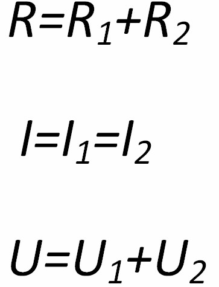
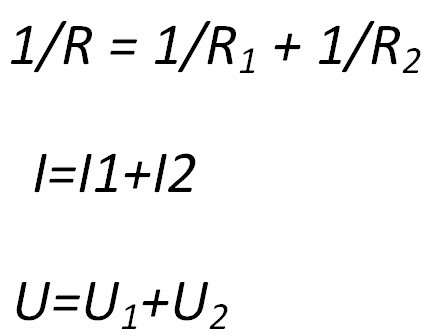

Scopul lucrării:să se verifice relaţiile pentru tensiune,intensitate şi rezistenţă pentru circuitele serie si paralel.
Materiale: multimetru ,două rezistoare ,sursă de tensiune, întrerupător ,fire de conexiun.
Note teoretice:relaţiile pentru rezistenţă,intensitate şi tensiune în cazul a două rezistoare conectate în serie sau în paralel sunt:
Circuit serie: Circuit paralel:
 Pentru măsurarea rezistenţei,intensităţii sau tensiunii se vor folosi multimetrul setat în regimurile respective-ohmmetru,ampermetru (10A) şi voltmetru.Pentru stabilirea veridicităţii relaţiilor de mai sus se va face raportul părţilor stângi şi drepte ale egalităţilor.Acest raport trebuie să difere puţin de unitate în cazul unor măsurări precise.
Circuit serie Circuit paralel


Modul de lucru:
a)circui serie
1. Setaţi multimetrul în calitate de ohmmetru şi măsuraţi rezistenţele  şi
şi  .
.
2. Legaţi rezistoarele în serie şi determinaţi rezistenţa totală a circuitelor.
3. Cnectaţi la capetele circuitului serie surssa de alimentare şi determinaţi intensităţile şi tensiunile pe fiacre porţiune.
4. înscrieţi datele în tabel,determinaţi  ,
,  ,
,  şi formulaţi concluziile de rigoare.
şi formulaţi concluziile de rigoare.
b)circuit paralel
1. Setaţi multimetrul în calitate de ohmmetru şi măsuraţi rezistenţele  şi
şi  .
.
2. Legaţi rezistoarele în paralel şi determinaţi rezistenţa circuitului.
3. Conectaţi la capetele circuitului paralel sursa de alimentare şi determinaţi intensităţile şi tensiunile pe fiecare porţiune.
4. înscrieţi datele în tabel,determinaţi  ,
,  ,
,  şi formulaţi concluziile de rigoare.
şi formulaţi concluziile de rigoare.
Schema circuitului serie:

Schema circuitului paralel:

Tabelul măsurărilor şi determinărilor
Circuit serie:
| Nr. | R | R1 | R2 | ηR | I | I 1 | I2 | ηI | U | U1 | U2 | ηU |
|---|---|---|---|---|---|---|---|---|---|---|---|---|
Circuit paralel:
| Nr. | R | R1 | R2 | ηR | I | I 1 | I2 | ηI | U | U1 | U2 | ηU |
|---|---|---|---|---|---|---|---|---|---|---|---|---|
Exemple de calcule
Circuit serie ηR=
ηI=
ηU=
Circuit paralel ηR=
ηI=
ηU=
Concluzii:_______________________________________________________________________________________________________________________
întrebări şi exerciţii:
1.Cum pot fi diminuate erorile în experimentele de mai sus?
________________________________________________________________________________________________________________________________
2.Cum trebuie să procedaţi dacă nu dispuneţi de multimetru?
________________________________________________________________________________________________________________________________
3.Poate fi folosit în lucrare un bec în calitate de rezistenţă?
________________________________________________________________________________________________________________________________